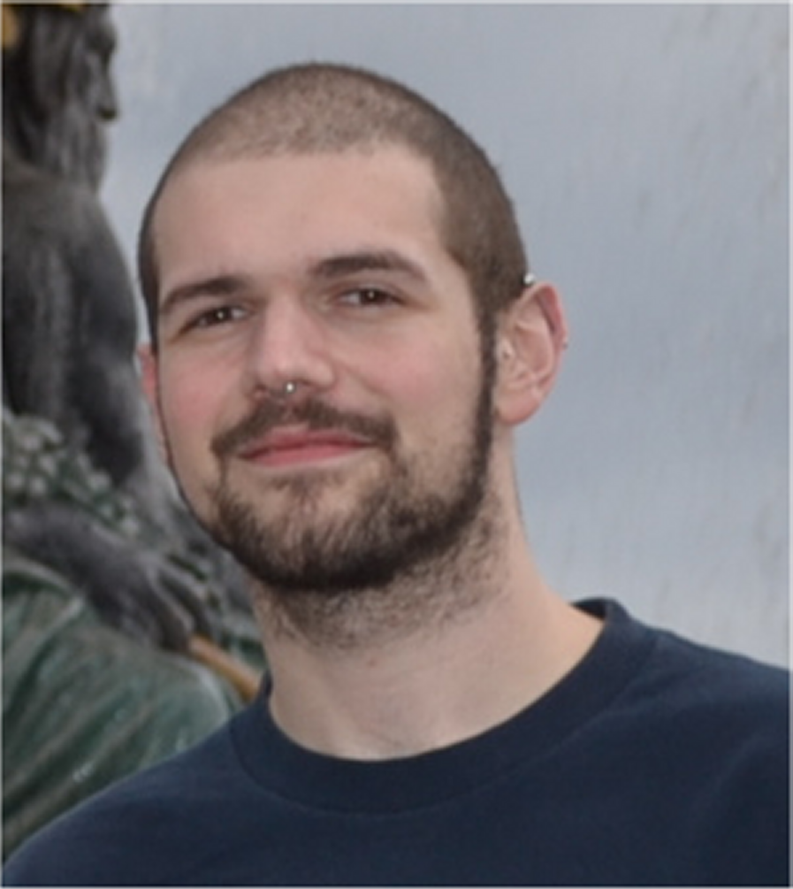
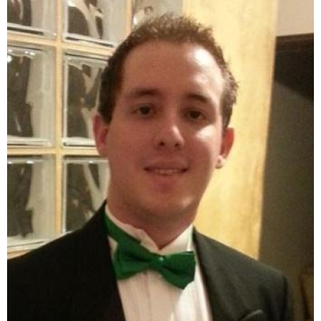
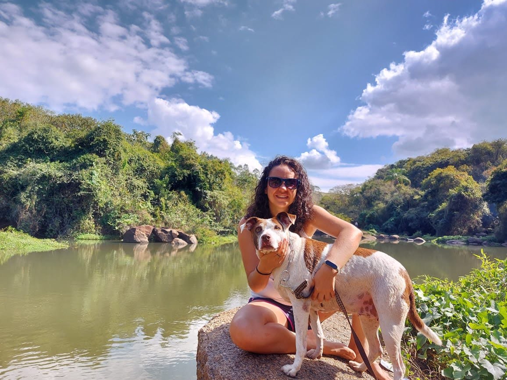
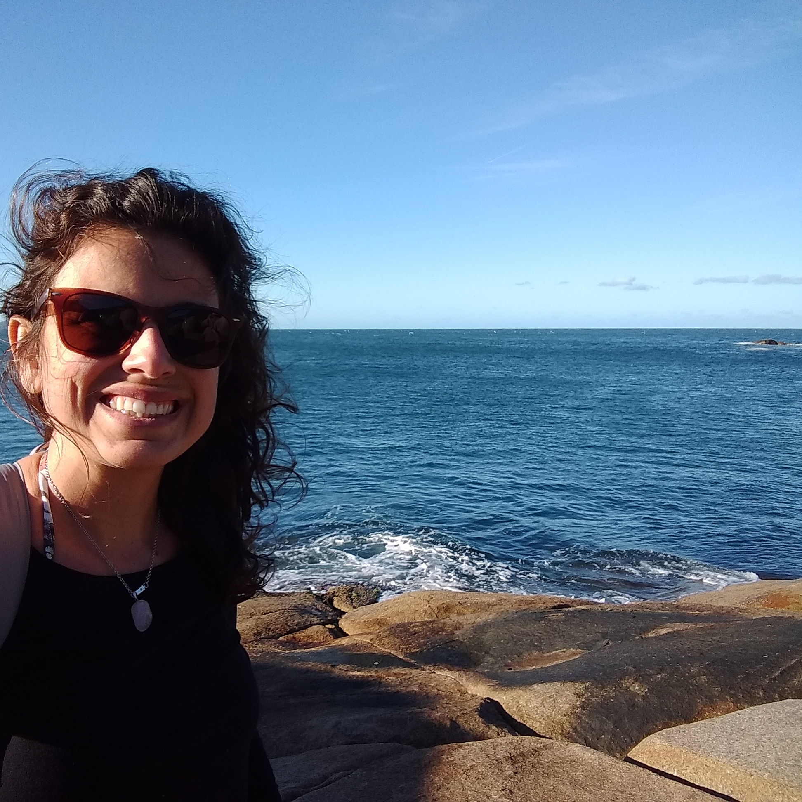
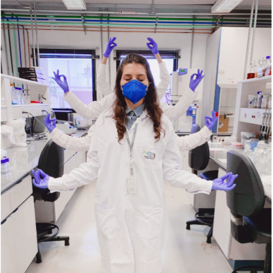
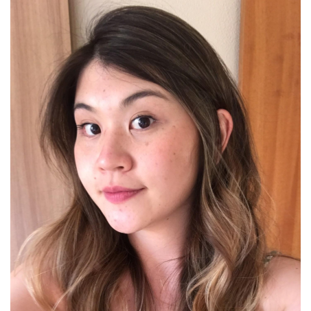
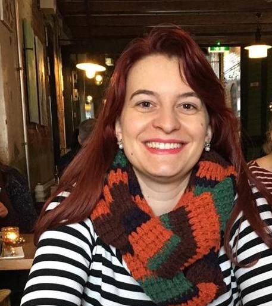
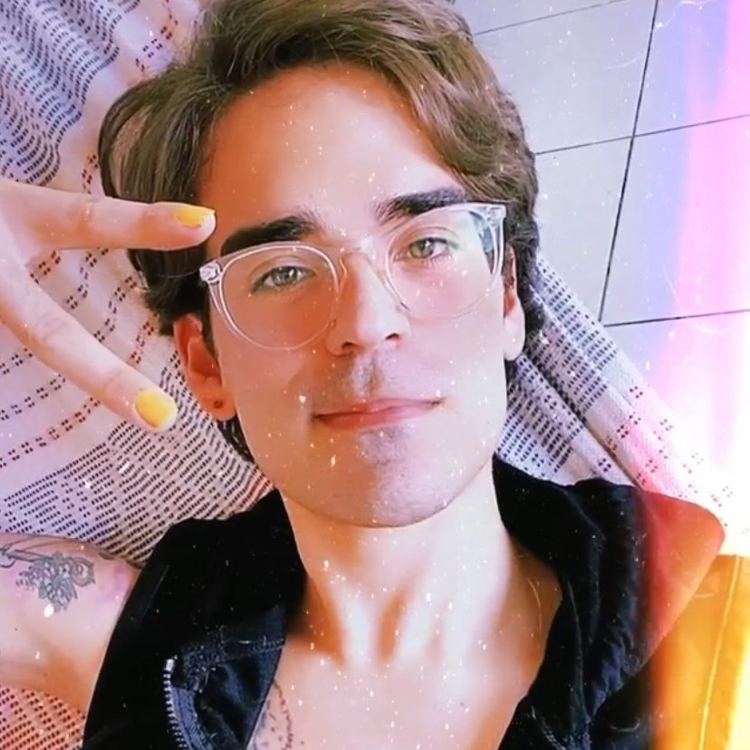

Equipe
Conheça a equipe por trás desse maravilhoso evento!
Coordenadores

Rodrigo Ligabue Braun
Instituição: UFCSPA
Titulação: Doutor
Área de atuação: Evolução molecular, modelagem molecular, toxinologia

Renato Augusto Corrêa dos Santos
Renato Santos é doutor em Genética e Biologia Molecular, com experiência em bioinformática. Atuou na área de microbiologia durante sua formação acadêmica, tendo desenvolvido projeto com a análise de genômica e transcriptômica de leveduras de importância em bioenergia (mestrado) e de fungos filamentosos com importância médica (doutorado). Tem experiência na organização de workshops para ensino de programação para biocientistas, principalmente para a análise de dados biológicos usando a linguagem.
Organizadores

Kelly Hidalgo Martinez
Me formei em Microbiologa na Colômbia e após vários anos trabalhando na Industria do Petróleo, vim para o Brasil a fazer pós-graduação. Atualmente faço doutorado em Genética e Biologia Molecular na UNICAMP. Meu projeto é desenvolvido no Grupo de Ecologia Microbiana e Multi-ômicas dirigido pela Dra. Valéria Maia Merzel. Uso bioinformática para estudar microbiomas de ambientes contaminados com petróleo e ajudar na procura do melhor tratamento para estas áreas. Atualmente minha principal paixão é a bioinformática.

Juliana A. Santos
<

Natalia Coutouné
Instituição: UFMG
Curso/Departamento: Mestrado em Genética
Titulação: Bacharel
Área de atuação: Genética, Bioinformática e Microbiologia

Amanda de Oliveira
Instituição: UNESP/Instituto Biológico
Curso/Departamento: Doutorado em Biologia Celular e Molecular
Titulação: Doutora
Área de atuação: Genética; Biologia Molecular; Mirmecologia e Microbiologia
Principais interesses: Microbiomas

Natalia Sayuri Wassano
Instituição: UNICAMP
Curso/Departamento: Doutorado em Biologia Funcional e Molecular
Titulação: Bacharel
Área de atuação: Microbiologia, Biologia Molecular, Bioquímica, Micologia

Lia Costa Pinto Wentzel
Instituição: The University of Auckland
Curso/Departamento: Doutorado em Ciências Biológicas
Titulação: Mestre
Área de atuação: Genética e Biologia Molecular; Bioinformática; Microbiologia
Principais interesses: Bioinformatica; Python; Microbioma
Débora Preceliano de Oliveira
- Lattes
- GitHub style="color:#fbc531">Lattes
- Researchgate
Instituição: UNICAMP
Curso/Departamento: Mestre em Química
Titulação: Mestre
Área de atuação: Biologia estrutural; Modelagem
Principais interesses: Modelagem, Python, Visualização de dados

Yasmine Alves Menegon
Instituição: UNESP
Curso/Departamento: Doutorado em Ciências Biológicas (MIcrobiologia Aplicada)
Titulação: Mestre
Área de atuação: Microbiologia; Biologia Molecular; Ecologia Microbiana; Microbiomas
Principais interesses: Microbiomas

Tulio de Lima Campos
Instituição: Fiocruz (Pernambuco) / The University of Melbourne
Curso/Departamento: Doutorado em Ciências Veterinárias (UniMelb)
Titulação: Mestre
Área de atuação: Bioinformática; Biologia computacional; Genética; Biologia molecular
Principais interesses: Ciência de dados, big data; parasitas/patógenos; genes essenciais
Arthur Alves Coelho
Instituição: California Institute of Technology
Curso/Departamento: Doutorado em Biologia
Titulação: Mestre
Área de atuação: Microbiologia; Biologia Molecular; Interações parasita-hospedeiro
Principais interesses: Fisiologia microbiana em infecções; Biofilmes; Metabólitos secondários
Marco Antonio de Freitas Clementino

Me formei em Ciências Biológicas pela Universidade Federal do Ceará (2014). Durante a graduação fiz intercâmbio na University of Western Australia (Perth, WA) onde estudei biologia forense, farmacologia e biologia molecular. Tenho doutorado em Toxicologia e Biologia do Câncer pela University of Kentucky (2019). Trabalhei como pesquisador de pós-doutorado no Markey Cancer Center. Atualmente sou professor visitante do Núcleo de Biomedicina (NUBIMED) da Universidade Federal do Ceará (UFC), e venho desenvolvendo testes para diagnóstico molecular de patógenos. Trabalho no Laboratório de Toxinologia Molecular (LTM) e no Laboratório de Infectologia (LDI) e leciono junto ao Programa de Pós-Graduação em Microbiologia Médica (PPGMM) da UFC